02 · IN1060 · Spring 2025
A screen-free focus timer for adults with ADHD. Turn the knob to set a focus session, and a ring of light shows how much time is left.
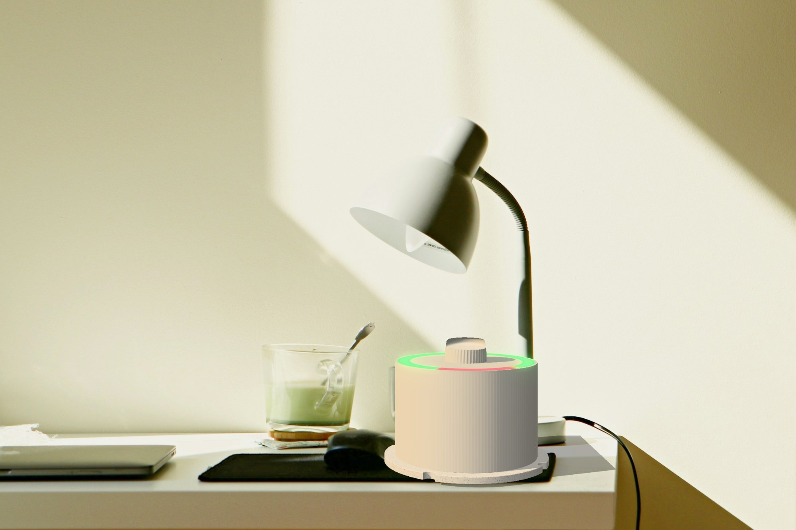
Visualisation of the final prototype, built from our 3D-print files.
Adults with ADHD in full-time jobs lose track of time, skip breaks and burn out. Focus apps don't help, because the phone is the distraction.
Designed with two users and an expert from ADHD Norge: 3 interviews, 4 workshops and 4 rounds of prototypes.
A timer with no screen. Light instead of numbers, 45-minute sessions and a fidget spinner in the base.
The course required us to build with Arduino, and screens were not allowed. It started as a rule, but our users proved it was the right choice for them too: their phones were exactly what pulled them out of focus.
Our users described two sides of the same problem. Boring tasks were hard to start. Interesting ones pulled them into hyperfocus for hours, with no breaks and no sense of time.
Both had tried Pomodoro apps and to-do lists and given up. The phone they needed for the timer was the same phone that distracted them. The course didn't allow screens anyway, and this showed us why that was right.
We are very strict about never having sessions longer than 45 minutes. Then there's a break, no matter what.
Domain expert, ADHD Norge (translated from Norwegian)
We interviewed two adults with ADHD and a domain expert, then ran four co-design workshops with the same two users. They explored materials, sketched their own ideas, tested prototypes and evaluated the final product.
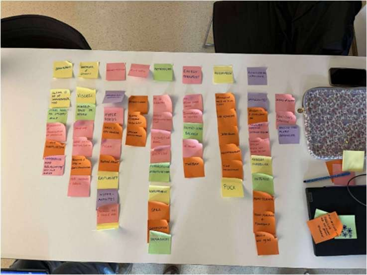
sorting it all out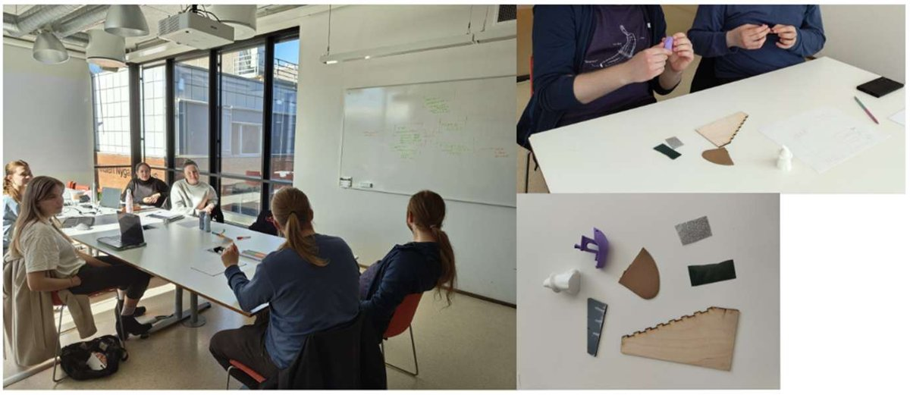
workshop 1: materials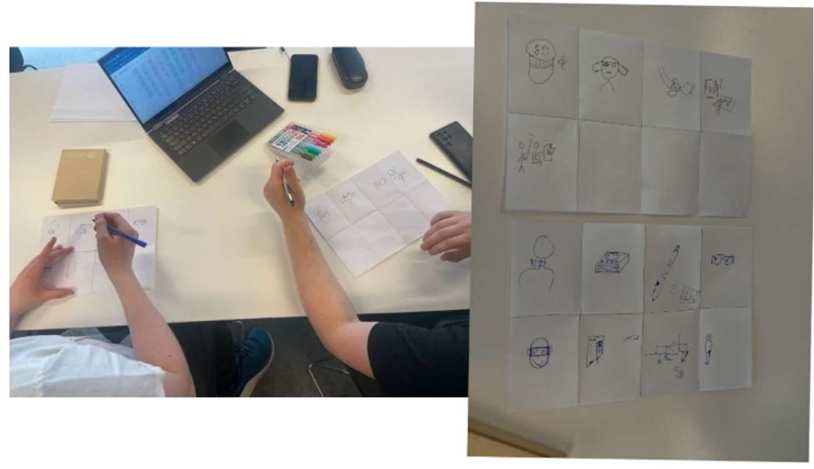
workshop 2: their ideasApps and phones pulled users away from work. The course's no-screen rule turned out to be exactly what they needed.
"Too much input, light, sound, disturbances – it works badly."
Hyperfocus led to exhaustion. The expert's rule: never more than 45 minutes without a break.
"I end up not taking enough breaks, and I'm exhausted after hyperfocus."
Both users were always fidgeting. It helped them focus, so it had to be part of the product, not a distraction from it.
"I always have to have something to fiddle with."
Quotes translated from Norwegian.
We turned the insights into five low-fidelity concepts and let the users vote. They picked the puck: easy to carry, and it shows time as colour instead of numbers.
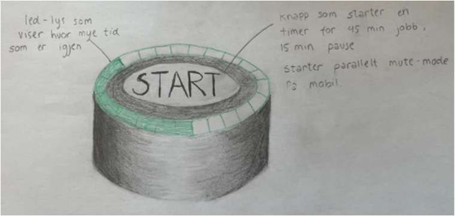
timer puck
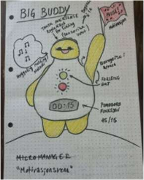
big buddy
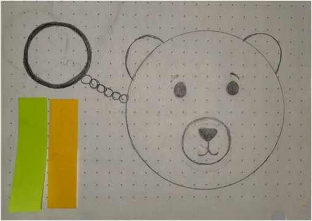
keychain bear
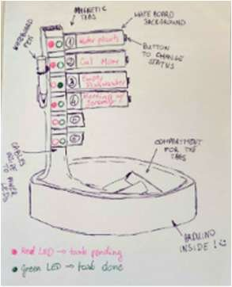
to-do lights
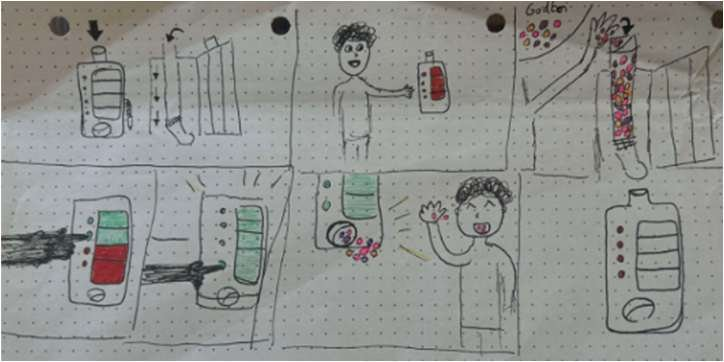
candy to-do
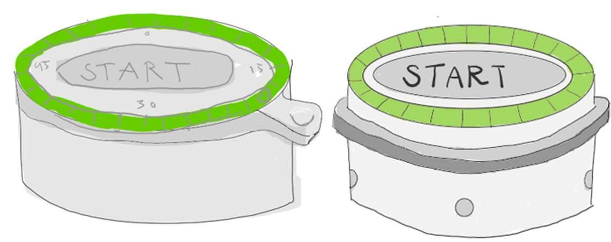
01
Shape, and where the light and button could go.
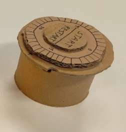
02
How the LED, button and fidget spinner fit together.
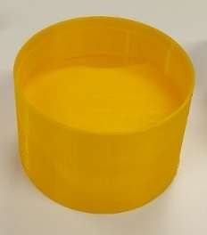
03
Users could finally hold it. Too rough, and they wanted a calmer colour.
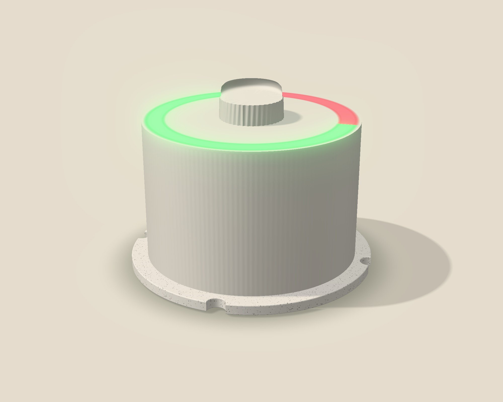
04
Smooth and neutral, green for focus, red for breaks, spinner in the base.
In the last workshop, users completed tasks like "start a focus session" while we observed. They pressed the button again and again without knowing they were restarting the timer, and nobody noticed when a break began.
Users couldn't tell if it was on
one green light always stays on
Unclear when no time was set
the first light blinks until you pick a time
Nobody noticed the break starting
the whole ring flashes red for 5 seconds
An Arduino drives a ring of 27 LEDs, controlled by a rotary encoder under the knob. We first planned a disc that physically rotated back as time ran out, but it was too complex to build reliably. So we learned to use a rotary encoder, a component none of us had used before.
keep scrolling to open it ↓
no time set, turn me!
Drag the knob around (or use the arrow keys), then click it to start. Click again during focus to restart. The demo runs fast: one second is one minute. And no, you can't skip the break.
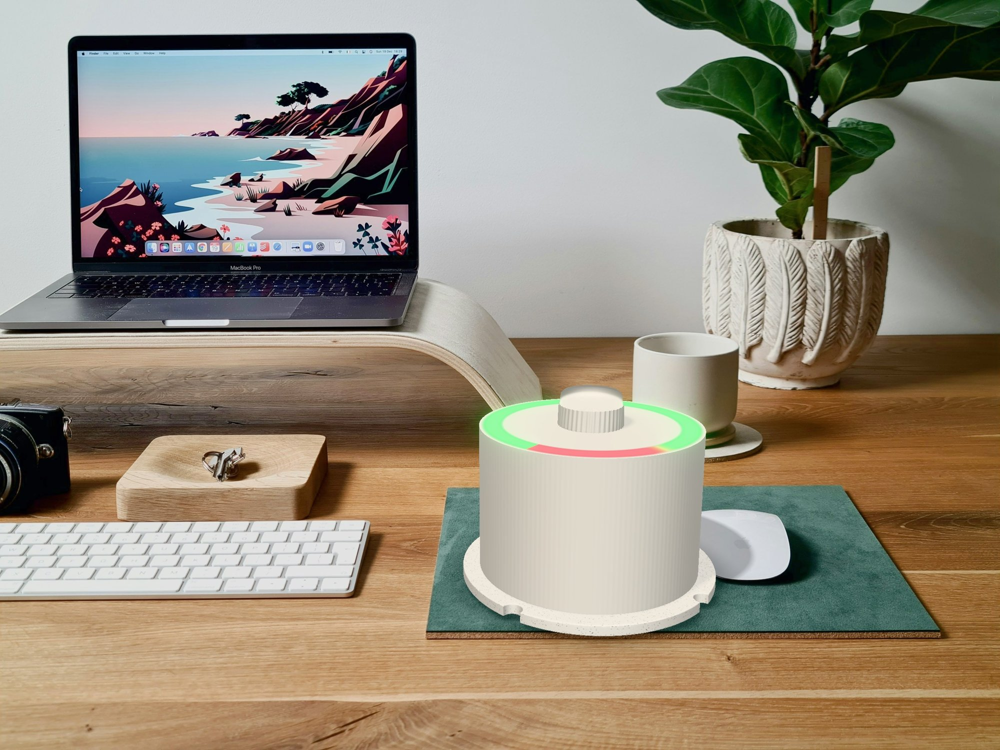
I was involved in every part of the project, from interviews to the final print. These were my main roles:
How design works in practice, not just in theory. Our users often wanted something different from what we as designers thought was best, and they were usually right. Testing also showed that things we found obvious, like pressing the knob to start, weren't intuitive at all.
Five people with different ideas need clear roles and a shared plan. We had neither for the first half of the project. Next time I'd push for a clear requirement spec and a named lead from day one, so we can spend the energy on the users instead.
Next project
VærSikret →